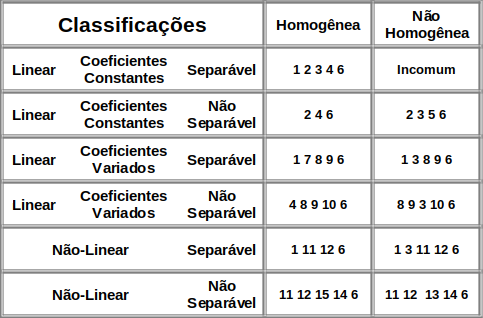

Costuma-se escolher um método para solucionar uma EDO de acordo com a sua classificação. A tabela mostra uma recomentação para métodos de acordo com a classificação. Apesar de haver vários métodos, o escopo da disciplina de Cálculo II envolve apenas os cinco primeiros métodos.

Legenda
- Separação de Variáveis
- Método dos Coeficientes Indeterminados
- Variação de Parâmetros ou Método de Lagrange
- Transformada de Laplace ou Método de Laplace
- Método da Superposição
- Métodos Numéricos
- Método das Variáveis Separáveis Generalizadas
- Métodos de Série de Potências ou Método da Série de Taylor
- Método de Frobenius
- Transformação de Legendre ou Método das Variáveis Dependentes e Independentes Trocadas
- Método das Substituições Adequadas
- Método das Equações Exatas
- Método da Linha Integral (ou Método das Características):
- Método de Perturbação
- Método de Bernoulli